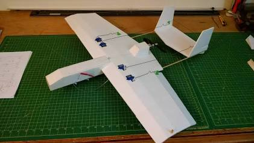

Investigación #1: Estructura
Análisis estructural y geometría alar para aeronaves no tripuladas (UAV)
Introducción y Objetivo
En esta investigación analizamos la estructura de los aviones de ala flechada y la optimización de fuselajes. El propósito fundamental de este trabajo es definir una arquitectura estructural eficiente para un dron de carga no tripulado (UAV).
La prioridad del diseño es maximizar el volumen útil interno, garantizar un acceso rápido a la mercancía y mantener una resistencia mecánica adecuada sin penalizar el peso total al despegue (MTOW).
Configuración General y Fuselaje
Para una aeronave de carga no presurizada, la geometría del fuselaje debe distanciarse del clásico tubo cilíndrico y optar por una forma funcional:
- Geometría de Sección Rectangular: Un fuselaje con sección transversal cuadrada o rectangular con bordes redondeados maximiza el espacio útil para paquetes volumétricos.
- Estructura Semimonocasco: Consiste en mamparos y cuadernas transversales unidos por larguerillos longitudinales. Permite transmitir los esfuerzos a lo largo de la piel exterior dejando el centro hueco para la carga.
Disposición Alar y Soporte Mecánico
La interacción entre el ala y el fuselaje define la estabilidad y la resistencia de la estructura:
- Configuración de Ala Alta: Posicionar el ala sobre la parte superior del fuselaje crea estabilidad pendular automática y deja el espacio inferior completamente libre para ubicar la masa de la carga útil.
- Larguero Principal (Spar): Se requiere un tubo continuo de fibra de carbono que atraviese el fuselaje por encima de la bahía de carga.
- Perfil Aerodinámico: Se deben priorizar perfiles de alta sustentación a velocidades moderadas (principalmente NACA 4412 o Clark Y), optimizados para generar empuje ascendente con cargas pesadas.

Figura 1: Referencia estructural y perfil aerodinámico de la aeronave.